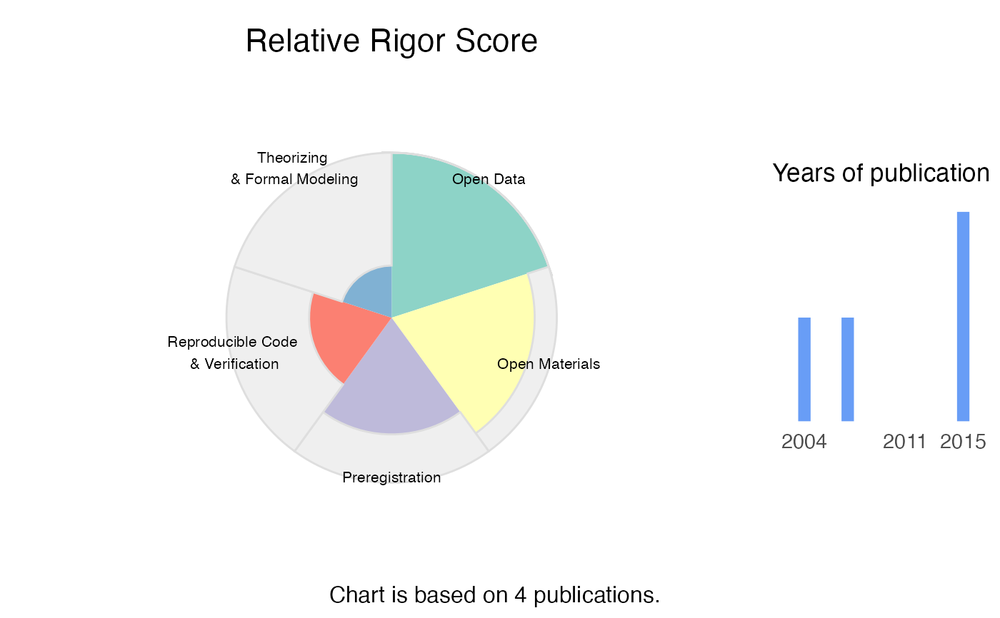

This function generates a radar chart that visualizes the rigor profile for a given applicant's data.
Usage
RRS_radarchart(
RRS,
title = "",
overall_score = FALSE,
minimal = FALSE,
show.legend = TRUE,
show.n_pub = TRUE,
base_size = 14
)Arguments
- RRS
The output from the
compute_RRSfunction.- title
The main title for the plot.
- overall_score
Show the overall score in the plot?
- minimal
If TRUE, a very simple chart without any legends is drawn
- show.legend
Show the legend to the right?
- show.n_pub
Show the number of publication on which the chart is based?
- base_size
Base font size
Value
A radar chart visualizing the rigor profile for the applicant, showing the distribution of scores across different dimensions.
Examples
radar_dat <- data.frame(
dimension = c("Open Data", "Open Materials", "Preregistration",
"Reproducible Code \n& Verification", "Theorizing \n& Formal Modeling"),
max_points = rep(10, 5),
rel_score=c(0.5, 0.3, 0.1, 0.6, 0.2),
xstart = 0:4,
xend = 1:5,
xmid=0:4 + 0.5
)
RRS <- list(radar_dat=radar_dat, overall_score=0.5, n_papers=4)
RRS_radarchart(RRS)
